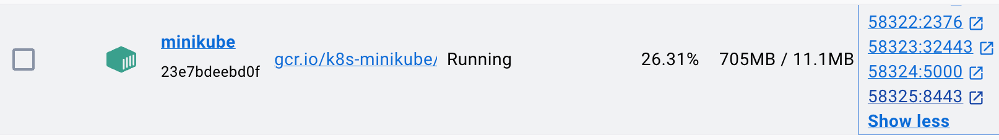
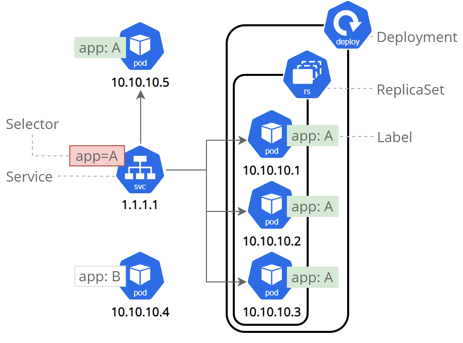

本文内容为官方文档的学习记录。
官方文档提供了一个教程，学习以下内容：
- 在集群中发布应用
- 伸缩发布的应用
- 更新发布的应用
- 调试发布的应用
Kubernetes 介绍
Kubernetes 集群为主从模式，由 Control Plane『Master』 和 Node『Slave』 组成，
Control Plane 负责管理集群，协调集群中的所有活动，例如调度应用程序、维护应用程序的所需状态、扩展应用程序以及更新。
Node 可以看作是一台虚拟机或者物理机，它是 Kubernetes 集群中的工作节点。每个 Node 上包含一个 Kubelet 服务，它是一个 agent，用于与 Control Plane 通信『通过 Kubernetes API』。为了支持容器相关操作，Node 上还需要安装支持 CRI 的组件，例如 containerd、CRI-O 或是 Docker。
Kubernetes 安装
在开始学习之前，先通过 minikube 项目在本地搭建一个 Kubernetes 集群，国区安装可参考 Minikube 国区安装 设置镜像。这里不必纠结 Kubernetes 的具体内容，先安装上手体验一下。
minikube 是开源社区打造的本地化 Kubernetes 集群安装工具，对初学者很友好。
安装
minikube前需要先安装Docker。
Mac 下可通过 brew 进行安装
brew install minikube之后启动一个集群
minikube start使用 kubectl 工具查看集群中的 Nodes，输出如下
kubectl get nodes
// output
NAME STATUS ROLES AGE VERSION
minikube Ready control-plane 1m v1.27.4如果本地没有安装 kubectl，可以参考 Install kubectl 进行安装，或者使用 minikube 中内嵌的 kubectl
minikube kubectl -- get nodesKubernetes 的基本操作
创建 Deployment
安装并运行集群后，可以开始在集群中发布一个应用了。应用的发布需要依赖 Kubernetes Deployment，它用于告知 Kubernetes 如何创建或更新一个应用实例。当创建一个 Deployment 后，Control Plane 会开始编排并调度该应用至某个 Node 上。
但应用实例被创建后，Deployment 会持续监控它的状态，如果应用被删除或意外停止，Depolyment 会创建另一个应用实例来替代它『自我修复机制』。
Kubernetes 提供了管理工具 kubectl，它通过 api 与集群控制中心进行交互。它的命令格式为 kubectl action resource，可通过 --help 命令查看可用 action 及参数。
下面使用 kubectl 创建一个 Deployment，并指定通过镜像 kicbase/echo-server:1.0 来创建容器。这个镜像包含一个简单的 echo 服务。
kubectl create deployment hello-node --image=kicbase/echo-server:1.0执行完成后，一个 Deployment 就创建好了。这个过程 Kubernetes 的做了以下几件事：
- 寻找合适的 Node 用于创建并运行该应用实例。
- 将应用编排到指定的 Node 上，也就是应用实例的创建和运行。
- 配置集群在需要时在新的 Node 上重新安排实例，例如之前的应用挂了。
此外，可通过如下命令查看默认命名空间下的 Deployment
kubectl get deployments
// output
NAME READY UP-TO-DATE AVAILABLE AGE
hello-node 1/1 1 1 7m22s
Pod 的概念
在 Kubernetes 中 Node 并不是容器运行的最小单位，而是 Pod，Pod 中包含一个或多个的容器，它拥有独立的网络环境，通常一个 Pod 中的容器共享该 Pod 的网络环境和存储资源。默认情况下同一集群中的 Pod 和 Services『先忽略这个名词，知道有这么个东西就行』 互相可见，但并不对外部开放，也就是说无法从外部直接访问集群中的网络。当一个 Node 故障时，该 Node 中的所有 Pod 会迁移至集群中的其它 Node。
前面通过 Deployment 创建的应用实例会运行在一个 Pod 中
kubectl get pods
NAME READY STATUS RESTARTS AGE
hello-node-6d5cf99b7b-gj5vx 1/1 Running 0 43m每个 Pod 都有自己的 IP『集群 IP』，外部想和集群内的网络通信，需要使用代理或其它手段。kubectl proxy 命令可在 localhost 和集群的 api server 直接创建一个代理，允许从 localhost 访问集群的 api server。
// 默认端口为 8001
kubectl proxy -p 8001之后访问该端口，输出如下
curl http://localhost:8001/version
// output
{
"major": "1",
"minor": "27",
"gitVersion": "v1.27.4",
"gitCommit": "fa3d7990104d7c1f16943a67f11b154b71f6a132",
"gitTreeState": "clean",
"buildDate": "2023-07-19T12:14:49Z",
"goVersion": "go1.20.6",
"compiler": "gc",
"platform": "linux/arm64"
}同时，kubectl proxy 命令会为每个 Pod 创建一个 Endpoint『可以理解成 ip:port，但并不等同，Endpoint 是一个抽象概念』，允许通过 Pod 的名称来访问该 Pod。
// 如果你本地有多个 Pod，由于格式问题后面 curl 会失败
export POD_NAME=$(kubectl get pods -o go-template --template '{{range .items}}{{.metadata.name}}{{"\n"}}{{end}}')
echo Name of the Pod: $POD_NAME
// 访问该 Pod，这里为 hello-node-6d5cf99b7b-gj5vx
curl http://localhost:8001/api/v1/namespaces/default/pods/$POD_NAME/返回内容如下
{
"kind": "Pod",
"apiVersion": "v1",
"metadata": {
"name": "hello-node-6d5cf99b7b-gj5vx",
"generateName": "hello-node-6d5cf99b7b-",
"namespace": "default",
"uid": "2c9c06ca-8b2a-4126-b295-5abf39ee254a",
"resourceVersion": "14973",
"creationTimestamp": "2023-09-28T01:40:23Z",
"labels": {
"app": "hello-node",
"pod-template-hash": "6d5cf99b7b"
},
"ownerReferences": [
{
"apiVersion": "apps/v1",
"kind": "ReplicaSet",
"name": "hello-node-6d5cf99b7b",
"uid": "07f89c5e-4da4-4800-b92d-ee132fe4f178",
"controller": true,
"blockOwnerDeletion": true
}
],
"managedFields": [
{
"manager": "kube-controller-manager",
"operation": "Update",
"apiVersion": "v1",
"time": "2023-09-28T01:40:23Z",
"fieldsType": "FieldsV1",
"fieldsV1": {
"f:metadata": {
"f:generateName": {},
"f:labels": {
".": {},
"f:app": {},
"f:pod-template-hash": {}
},
"f:ownerReferences": {
".": {},
"k:{\"uid\":\"07f89c5e-4da4-4800-b92d-ee132fe4f178\"}": {}
}
},
"f:spec": {
"f:containers": {
"k:{\"name\":\"echo-server\"}": {
".": {},
"f:image": {},
"f:imagePullPolicy": {},
"f:name": {},
"f:resources": {},
"f:terminationMessagePath": {},
"f:terminationMessagePolicy": {}
}
},
"f:dnsPolicy": {},
"f:enableServiceLinks": {},
"f:restartPolicy": {},
"f:schedulerName": {},
"f:securityContext": {},
"f:terminationGracePeriodSeconds": {}
}
}
},
{
"manager": "kubelet",
"operation": "Update",
"apiVersion": "v1",
"time": "2023-09-28T01:40:31Z",
"fieldsType": "FieldsV1",
"fieldsV1": {
"f:status": {
"f:conditions": {
"k:{\"type\":\"ContainersReady\"}": {
".": {},
"f:lastProbeTime": {},
"f:lastTransitionTime": {},
"f:status": {},
"f:type": {}
},
"k:{\"type\":\"Initialized\"}": {
".": {},
"f:lastProbeTime": {},
"f:lastTransitionTime": {},
"f:status": {},
"f:type": {}
},
"k:{\"type\":\"Ready\"}": {
".": {},
"f:lastProbeTime": {},
"f:lastTransitionTime": {},
"f:status": {},
"f:type": {}
}
},
"f:containerStatuses": {},
"f:hostIP": {},
"f:phase": {},
"f:podIP": {},
"f:podIPs": {
".": {},
"k:{\"ip\":\"10.244.0.7\"}": {
".": {},
"f:ip": {}
}
},
"f:startTime": {}
}
},
"subresource": "status"
}
]
},
"spec": {
"volumes": [
{
"name": "kube-api-access-ch42v",
"projected": {
"sources": [
{
"serviceAccountToken": {
"expirationSeconds": 3607,
"path": "token"
}
},
{
"configMap": {
"name": "kube-root-ca.crt",
"items": [
{
"key": "ca.crt",
"path": "ca.crt"
}
]
}
},
{
"downwardAPI": {
"items": [
{
"path": "namespace",
"fieldRef": {
"apiVersion": "v1",
"fieldPath": "metadata.namespace"
}
}
]
}
}
],
"defaultMode": 420
}
}
],
"containers": [
{
"name": "echo-server",
"image": "kicbase/echo-server:1.0",
"resources": {},
"volumeMounts": [
{
"name": "kube-api-access-ch42v",
"readOnly": true,
"mountPath": "/var/run/secrets/kubernetes.io/serviceaccount"
}
],
"terminationMessagePath": "/dev/termination-log",
"terminationMessagePolicy": "File",
"imagePullPolicy": "IfNotPresent"
}
],
"restartPolicy": "Always",
"terminationGracePeriodSeconds": 30,
"dnsPolicy": "ClusterFirst",
"serviceAccountName": "default",
"serviceAccount": "default",
"nodeName": "minikube",
"securityContext": {},
"schedulerName": "default-scheduler",
"tolerations": [
{
"key": "node.kubernetes.io/not-ready",
"operator": "Exists",
"effect": "NoExecute",
"tolerationSeconds": 300
},
{
"key": "node.kubernetes.io/unreachable",
"operator": "Exists",
"effect": "NoExecute",
"tolerationSeconds": 300
}
],
"priority": 0,
"enableServiceLinks": true,
"preemptionPolicy": "PreemptLowerPriority"
},
"status": {
"phase": "Running",
"conditions": [
{
"type": "Initialized",
"status": "True",
"lastProbeTime": null,
"lastTransitionTime": "2023-09-28T01:40:23Z"
},
{
"type": "Ready",
"status": "True",
"lastProbeTime": null,
"lastTransitionTime": "2023-09-28T01:40:31Z"
},
{
"type": "ContainersReady",
"status": "True",
"lastProbeTime": null,
"lastTransitionTime": "2023-09-28T01:40:31Z"
},
{
"type": "PodScheduled",
"status": "True",
"lastProbeTime": null,
"lastTransitionTime": "2023-09-28T01:40:23Z"
}
],
"hostIP": "192.168.49.2",
"podIP": "10.244.0.7",
"podIPs": [
{
"ip": "10.244.0.7"
}
],
"startTime": "2023-09-28T01:40:23Z",
"containerStatuses": [
{
"name": "echo-server",
"state": {
"running": {
"startedAt": "2023-09-28T01:40:31Z"
}
},
"lastState": {},
"ready": true,
"restartCount": 0,
"image": "kicbase/echo-server:1.0",
"imageID": "docker-pullable://kicbase/echo-server@sha256:127ac38a2bb9537b7f252addff209ea6801edcac8a92c8b1104dacd66a583ed6",
"containerID": "docker://c6aa05f95996db36880534bd94c75ffd3b375048528c6cbd2eee5b7b6b827354",
"started": true
}
],
"qosClass": "BestEffort"
}
}那么如何访问前面创建的 echo 服务呢？echo 服务默认监听端口为 8080，在使用 kubectl proxy 后通过如下接口即可访问『这种方式并不优雅，后面会学习如何暴露 Pod 中的应用』
curl http://localhost:8001/api/v1/namespaces/default/pods/$POD_NAME:8080/proxy/
// output
Request served by hello-node-6d5cf99b7b-gj5vx
HTTP/1.1 GET /
Host: 127.0.0.1:58325
Accept: */*
Accept-Encoding: gzip
User-Agent: curl/8.1.2
X-Forwarded-For: 127.0.0.1, 192.168.49.1
X-Forwarded-Uri: /api/v1/namespaces/default/pods/hello-node-6d5cf99b7b-gj5vx:8080/proxy/kubectl 是如何与集群交互的呢？虽然前面提了是通过使用 api，那它是如何从外部访问集群 api 的呢？
自然不会通过 kubectl proxy，毕竟要执行该命令，首先就要能够访问 api。Kubernetes 的 api 服务默认监听在 6443 端口，并且对外部开放『一定要配置认证机制』，minikube 略有不同，当通过 minikube 安装集群后，minikube 会监听端口 58325

查看当前 kuberconfig 配置文件『位于 ~/.kube/config』，你可以使用如下命令查看它
kubectl config view
// output
apiVersion: v1
- cluster:
certificate-authority: /Users/trganda/.minikube/ca.crt
extensions:
- extension:
last-update: Wed, 27 Sep 2023 14:56:42 CST
provider: minikube.sigs.k8s.io
version: v1.31.2
name: cluster_info
server: https://127.0.0.1:58325
name: minikubeNode 的概念
Node 是集群中的工作节点，承载着运行 Pod 的任务，它可以是虚拟机也可以是物理机器。控制中心通过调度策略在不同 Node 之间调度 Pod，每一个 Node 至少包含以下服务：
Kubelet，Kuberentes中的Agent，负责与控制中心通信，并管理当前 Node 中的 Pod。- 容器运行时环境『例如 Docker』，复杂拉取镜像，创建容器并运行容器。
查看 Pods 和 Nodes
kubectl 提供了一系列命令用于查看 Pod 和 Node 的信息。
kubectl get：列出资源kubectl describe：查看资源的详细信息kubectl logs：查看 Pod 中容器的日志信息kubectl exec：在 Pod 中的容器中执行命令
下面以前面创建的 echo 服务进行演示，
查看 Pod
kubectl get pods
NAME READY STATUS RESTARTS AGE
hello-node-6d5cf99b7b-gj5vx 1/1 Running 0 62m查看 Pod 的详细信息
kubectl describe pods
Name: hello-node-6d5cf99b7b-gj5vx
Namespace: default
Priority: 0
Service Account: default
Node: minikube/192.168.49.2
Start Time: Thu, 28 Sep 2023 09:40:23 +0800
Labels: app=hello-node
pod-template-hash=6d5cf99b7b
Annotations: <none>
Status: Running
IP: 10.244.0.7
IPs:
IP: 10.244.0.7
Controlled By: ReplicaSet/hello-node-6d5cf99b7b
Containers:
echo-server:
Container ID: docker://c6aa05f95996db36880534bd94c75ffd3b375048528c6cbd2eee5b7b6b827354
Image: kicbase/echo-server:1.0
Image ID: docker-pullable://kicbase/echo-server@sha256:127ac38a2bb9537b7f252addff209ea6801edcac8a92c8b1104dacd66a583ed6
Port: <none>
Host Port: <none>
State: Running
Started: Thu, 28 Sep 2023 09:40:31 +0800
Ready: True
Restart Count: 0
Environment: <none>
Mounts:
/var/run/secrets/kubernetes.io/serviceaccount from kube-api-access-ch42v (ro)
Conditions:
Type Status
Initialized True
Ready True
ContainersReady True
PodScheduled True
Volumes:
kube-api-access-ch42v:
Type: Projected (a volume that contains injected data from multiple sources)
TokenExpirationSeconds: 3607
ConfigMapName: kube-root-ca.crt
ConfigMapOptional: <nil>
DownwardAPI: true
QoS Class: BestEffort
Node-Selectors: <none>
Tolerations: node.kubernetes.io/not-ready:NoExecute op=Exists for 300s
node.kubernetes.io/unreachable:NoExecute op=Exists for 300s
Events: <none>查看指定 Pod 的详细信息
kubectl describe pod hello-node-6d5cf99b7b-gj5vx查看 Pod 中容器的日志，如果 Pod 中只有一个容器，则可以直接指定 Pod 的名称
kubectl logs hello-node-6d5cf99b7b-gj5vx
Echo server listening on port 8080.
10.244.0.1:54962 | GET /或者显示指定容器名
kubectl logs hello-node-6d5cf99b7b-gj5vx -c echo-server
Echo server listening on port 8080.
10.244.0.1:54962 | GET /在容器中执行命令，类似地，如果 Pod 中只有一个容器，则可以直接指定 Pod 的名称
kubectl exec hello-node-6d5cf99b7b-gj5vx -- env
// 显示指定容器名
kubectl exec hello-node-6d5cf99b7b-gj5vx -c echo-server -- env
echo server所用镜像中没有env命令，这里只是演示
交互模式启动 shell
kubectl exec -ti hello-node-6d5cf99b7b-gj5vx -c echo-server -- bash使用 Service 暴露服务
前面提到 Pod 只拥有集群内部的 IP 地址，在创建应用后外部并没有办法直接访问它。虽然可以通过 kubectl proxy 以代理的形式进行访问，但这样做有一些问题。
首先 Pod 有自己的生命周期，当 Pod 自身出现故障或所处 Node 出现故障，Pod 会在集群的其它地方被恢复，那么它的名称就可能发生变化，分配的集群 IP 也是如此。很明显，kubectl proxy 这种与 Pod 强绑定的方式不够灵活，也不易于维护。
为此 Kuberentes 中提供了一项功能 Services，它是服务的抽象概念，Services 可以与一个或一组 Pod 关联，它负责查找协调与之关联的 Pod 的变更，对外部隐藏 Pod 的变化。这样只要知道 Services 的信息就可以访问 Pod 中提供的服务，而不需要关心 Pod 是否出现故障，是否被恢复或迁移，甚至扩容。
Services 通过 Labels 和 Selector，也就是标签的形式来确定与之关联的 Pod『通过 yaml 配置文件中的 selector 字段指定』，这也是 Kubernetes 所有资源对象最常用的方式，下图展示了 Service 使用标签来确定与之关联的 Pod。

在图中，只有标签与 Service 的 Selector 指定的标签相同的 Pod 才会被选中。
创建 Services
下面尝试为 Pod 创建一个 Service，先查看当前 Pod
kubectl get pods
NAME READY STATUS RESTARTS AGE
hello-node-6d5cf99b7b-gj5vx 1/1 Running 0 134m为该 Pod 创建一个类型为 NodePort 的 Service
kubectl expose deployment hello-node --type="NodePort" --port=8080上面的命令表示暴露名称为 hello-node 的 Deployment，--port 指定创建的 Service 的应服务的端口，如果不指定则从待暴露的资源中复制『如果存在』，也就是从 hello-node 中获取。
创建之后可通过如下命令查看当前的 Services
kubernetes是minikube默认创建的service。
kubectl get services
NAME TYPE CLUSTER-IP EXTERNAL-IP PORT(S) AGE
hello-node NodePort 10.111.18.163 <none> 8080:30255/TCP 171m
kubernetes ClusterIP 10.96.0.1 <none> 443/TCP 23h现在来查看 hello-node 的详细信息，NodePort 模式对外暴露的端口是 30255
kubectl describe services hello-node
Name: hello-node
Namespace: default
Labels: app=hello-node
Annotations: <none>
Selector: app=hello-node
Type: NodePort
IP Family Policy: SingleStack
IP Families: IPv4
IP: 10.111.18.163
IPs: 10.111.18.163
Port: <unset> 8080/TCP
TargetPort: 8080/TCP
NodePort: <unset> 30255/TCP
Endpoints: 10.244.0.7:8080
Session Affinity: None
External Traffic Policy: Cluster
Events: <none>接下来就可以使用 Node 的 IP+NodePort 来访问该 Service 了，不过由于本地 minikube 是安装在 Docker 环境中的，minikube 无法在运行时动态添加对外暴露的端口，所以你会发现本地并没有任何进程在监听 NodePort=30255
为此需要使用 minikube 提供的命令
minikube service hello-node --url
http://127.0.0.1:61761
❗ Because you are using a Docker driver on darwin, the terminal needs to be open to run it.之后再访问 http://127.0.0.1:61761，即可访问刚刚创建的 Service
Minikube Service 是如何工作的
查看 61761 关联的进程 PID
lsof -i :61761
COMMAND PID USER FD TYPE DEVICE SIZE/OFF NODE NAME
ssh 27471 trganda 5u IPv6 0x6fc015fbc2e813d5 0t0 TCP localhost:61761 (LISTEN)
ssh 27471 trganda 6u IPv4 0x6fc015f21cbfea85 0t0 TCP localhost:61761 (LISTEN)查看相应进程
ps aux | grep 27471
trganda 27471 0.0 0.0 408657984 4272 s011 S+ 11:32AM 0:00.01 ssh -o UserKnownHostsFile=/dev/null -o StrictHostKeyChecking=no -o IdentitiesOnly=yes -N docker@127.0.0.1 -p 58321 -i /Users/trganda/.minikube/machines/minikube/id_rsa -L 61761:10.111.18.163:8080可以看到执行的命令如下，下面这段命令通过 ssh 的端口转发功能，将本地的 61761 端口转发至 10.111.18.163 的 8080 端口。其中 10.111.18.163 是刚刚创建的 Service 的 IP 地址。
ssh -o UserKnownHostsFile=/dev/null -o StrictHostKeyChecking=no -o IdentitiesOnly=yes -N docker@127.0.0.1 -p 58321 -i /Users/trganda/.minikube/machines/minikube/id_rsa -L 61761:10.111.18.163:8080Labels 的使用
前面说过 Service 通过标签来定位所需关联的 Pod，但是在前面的命令中 kubectl expose 命令中并没有指定标签『通过 --selector 选项』，这是因为默认情况下，你可以不指定 --selector 选项，它尝试会从 Replication Controller(RC) 或者 Replica Set(RS) 获取。
现在不用在意
RC和RS是什么，只要知道它们是一种控制器就行。
那么前面创建的 Deployment 的标签有哪些呢？在创建时，并没有手动指定任何标签，查看 hello-node 的详细信息
kubectl describe deployment hello-node
Name: hello-node
Namespace: default
CreationTimestamp: Thu, 28 Sep 2023 09:40:23 +0800
Labels: app=hello-node
Annotations: deployment.kubernetes.io/revision: 1
Selector: app=hello-node
Replicas: 1 desired | 1 updated | 1 total | 1 available | 0 unavailable
StrategyType: RollingUpdate
MinReadySeconds: 0
RollingUpdateStrategy: 25% max unavailable, 25% max surge
Pod Template:
Labels: app=hello-node
Containers:
echo-server:
Image: kicbase/echo-server:1.0
Port: <none>
Host Port: <none>
Environment: <none>
Mounts: <none>
Volumes: <none>
Conditions:
Type Status Reason
---- ------ ------
Available True MinimumReplicasAvailable
Progressing True NewReplicaSetAvailable
OldReplicaSets: <none>
NewReplicaSet: hello-node-6d5cf99b7b (1/1 replicas created)
Events: <none>可以看到包含了一个默认的标签 app=hello-node，它的值就是这个 Deployment 的名字，并且从 Pod Template 中的内容可以看出，通过该 Deployment 定义的 Pod 都包含该标签。
现在来查看一下携带该标签的 Pod
kubectl get pods -l app=hello-node
NAME READY STATUS RESTARTS AGE
hello-node-6d5cf99b7b-gj5vx 1/1 Running 0 5h9m可以使用如下命令为 Pod 新增一个标签
kubectl label pods hello-node-6d5cf99b7b-gj5vx version=v1再查看一次该 Pod 的信息，已经包含新增的标签了
kubectl describe pod hello-node-6d5cf99b7b-gj5vx
Name: hello-node-6d5cf99b7b-gj5vx
Namespace: default
Priority: 0
Service Account: default
Node: minikube/192.168.49.2
Start Time: Thu, 28 Sep 2023 09:40:23 +0800
Labels: app=hello-node
pod-template-hash=6d5cf99b7b
version=v1删除 Service
可通过如下命令删除 Service，也可以不指定标签，
kubectl delete service hello-node -l app=hello-nodeScaling out a Deployment
下面来了解如何对一个 Deployment 描述的 Pod 进行扩容『横向扩展』。扩容后将确保基于 Deployment 创建新的 Pod 并将其调度到具有可用的 Node 上。如果将 Pod 的数量缩减至 0，那么意味着终止所有的 Pod。
Kubernetes 支持 Pod 的 自动伸缩，以后再讨论。
对 Pod 进行扩容就需要解决，如何进行流量的分发，这就需要用到前面学习的 Service。Service 内置了一个负载均衡器用于在关联的 Pod 之间分发流量。Service 使用 Endpoints 持续监控正在运行的 Pod， 以确保流量仅发送到可用的 Pod。
在开始之前，先来了解一下 kubectl get deployments 命令执行结果中每一列的含义，这个在之前并没有解释
kubectl get deployments
NAME READY UP-TO-DATE AVAILABLE AGE
hello-node 4/4 4 4 6h51m
NAME：Deployment的名称READY：显示当前Pod数量和所需副本的比率UP-TO-DATE：显示当前有多少副本已更新至期望的状态AVAILABLE：显示当前可用的Pod副本数量AGE：显示Pod已运行的时间。
Deployment 默认使用的控制器是 ReplicaSet，ReplicaSet 的命名格式为 [DEPLOYMENT-NAME]-[RANDOM-STRING]，随机字符串使用的是 ReplicaSet 的标签 pod-template-hash=6d5cf99b7b 作为种子。
可使用如下命令查看 ReplicaSet，
kubectl get rs
NAME DESIRED CURRENT READY AGE
hello-node-6d5cf99b7b 4 4 4 6h46m其中两列的含义如下
DESIRED：显示期望的副本数量。CURRENT：显示当前运行中的副本数量。
扩容 Pod
下面开始尝试对前面创建的 Deployment 进行扩容，使用如下命令
kubectl scale deployments hello-node --replicas=4此刻再来查看 ReplicaSet，会发现数量已经增长至 4 个，
kubectl get rs
NAME DESIRED CURRENT READY AGE
hello-node-6d5cf99b7b 4 4 4 6h46m查看当前的 Pod，这里设定输出格式为 wide，显示更多信息，可以看到 Pod 的数量增涨到了 4 个，并且各自有独立的集群 IP
kubectl get pods -o wide
NAME READY STATUS RESTARTS AGE IP NODE NOMINATED NODE READINESS GATES
hello-node-6d5cf99b7b-4mwkh 1/1 Running 0 71s 10.244.0.8 minikube <none> <none>
hello-node-6d5cf99b7b-gj5vx 1/1 Running 0 6h47m 10.244.0.7 minikube <none> <none>
hello-node-6d5cf99b7b-ldh2w 1/1 Running 0 71s 10.244.0.9 minikube <none> <none>
hello-node-6d5cf99b7b-llzhf 1/1 Running 0 71s 10.244.0.10 minikube <none> <none>而上述扩容的操作，会在 Deployment 的日志中记录，通过如下命令查看它的 Events
kubectl describe deployment hello-node
...
NewReplicaSet: hello-node-6d5cf99b7b (4/4 replicas created)
Events:
Type Reason Age From Message
---- ------ ---- ---- -------
Normal ScalingReplicaSet 110s deployment-controller Scaled up replica set hello-node-6d5cf99b7b to 4 from 1负载均衡
如果前面创建的 Service 被删除的话，你可以重新创建它
kubectl expose deployment hello-node --type="NodePort" --port=8080查看一下之前创建的 Service
kubectl describe services hello-node
Name: hello-node
Namespace: default
Labels: app=hello-node
Annotations: <none>
Selector: app=hello-node
Type: NodePort
IP Family Policy: SingleStack
IP Families: IPv4
IP: 10.105.207.65
IPs: 10.105.207.65
Port: <unset> 8080/TCP
TargetPort: 8080/TCP
NodePort: <unset> 31534/TCP
Endpoints: 10.244.0.10:8080,10.244.0.7:8080,10.244.0.8:8080 + 1 more...可以看到与之前相比，Endpoints 的数量也同时增加到了 4 个，分别对应前面 4 个 Pod 的 IP 地址。
缩减 Pod
缩减 Pod 数量的操作与前面类似，修改 --replicas 选项即可，下面的命令将副本数量缩减至 2
kubectl scale deployments hello-node --replicas=2下面尝试把 --replicas 设置为 0，看看会发生什么
kubectl scale deployments hello-node --replicas=0查看当前 Pod，发现都没有了
kubectl get pods
No resources found in default namespace.查看 ReplicaSet 都日志，会发现都被删除了
kubectl describe rs hello-node-6d5cf99b7b
Name: hello-node-6d5cf99b7b
// ...
Events:
Type Reason Age From Message
---- ------ ---- ---- -------
// ...
Normal SuccessfulDelete 32s replicaset-controller Deleted pod: hello-node-6d5cf99b7b-gj5vx
Normal SuccessfulDelete 32s replicaset-controller Deleted pod: hello-node-6d5cf99b7b-ldh2w相应的 Service 中的 Endpoints 也空了
kubectl describe services hello-node
Name: hello-node
// ...
Endpoints: <none>更新 Deployment
最后来学习，如何更新 Deployment 中发布的应用。在 Kubernetes 中，更新是带版本控制的，任何更新都可以恢复到以前的（稳定）版本。
下面尝试对之前的创建的 Deployment 进行更新，下面的命令表示对名为 hello-node 的 Deployment，更新其中名称为 echo-server『名称可通过 kubectl describe deployment 获取』的镜像为 kicbase/echo-server:2.0，
kubectl set image deployments hello-node echo-server=kicbase/echo-server:2.0此时查看 Pod
kubectl get pods
NAME READY STATUS RESTARTS AGE
hello-node-59d99f6c4c-xxcsl 0/1 ImagePullBackOff 0 60s
hello-node-6d5cf99b7b-n4mgm 1/1 Running 0 3m43s会发现有一个 Pod 的状态为 ImagePullBackOff，表示正在后台拉去新的镜像，不过由于镜像 kicbase/echo-server:2.0 并不存在，所以会一直卡住，这里只是做一个演示。可以通过查看 Pod 的日志来确定问题
kubectl describe pod hello-node-59d99f6c4c-8l7vw
...
Events:
Type Reason Age From Message
---- ------ ---- ---- -------
Normal Scheduled 30s default-scheduler Successfully assigned default/hello-node-59d99f6c4c-8l7vw to minikube
Normal BackOff 25s kubelet Back-off pulling image "kicbase/echo-server:2.0"
Warning Failed 25s kubelet Error: ImagePullBackOff
Normal Pulling 11s (x2 over 29s) kubelet Pulling image "kicbase/echo-server:2.0"
Warning Failed 8s (x2 over 26s) kubelet Failed to pull image "kicbase/echo-server:2.0": rpc error: code = Unknown desc = Error response from daemon: manifest for kicbase/echo-server:2.0 not found: manifest unknown: manifest unknow现在回退更新，很简单，执行如下命令即可，
kubectl rollout undo deployments hello-node当然你也可以将镜像改为 kicbase/echo-server:1.0 并重新执行命令，但本质上这不是回退，而是另一次更新。
kubectl set image deployments hello-node echo-server=kicbase/echo-server:1.0